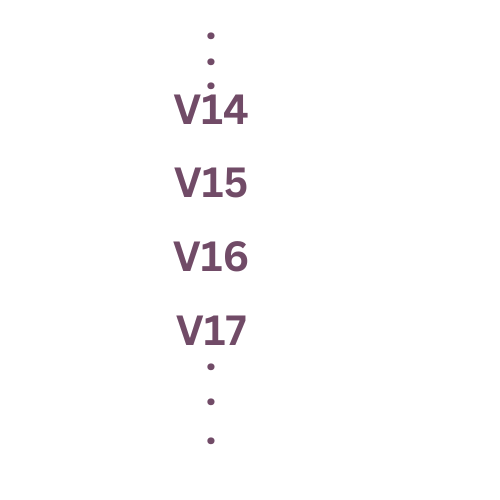

Hello there, I'm Jay Ambaliya
With 3 years of hands-on experience in Odoo, I specialize in delivering tailored solutions for businesses of all sizes. As an Odoo expert, I offer comprehensive services including module development, customization, data migration, and third-party integrations. My freelancing journey allows me to provide agile and efficient solutions that align with my clients' specific needs.
What I Brings To The Table
Odoo Module Development/Customization
I provide tailored Odoo solutions to meet your unique business needs. From custom module development to tweaking existing functionalities, I ensure that Odoo is fully customized to suit your operational workflows, enhancing productivity and flexibility.
Odoo Functional Consultant
As an Odoo Functional Consultant, I provide in-depth analysis of your business requirements to implement Odoo solutions that align with your processes. From initial consultation to post-implementation support, I ensure that your Odoo setup is tailored to improve your operational efficiency.
Data Migration Specialist
With expertise in data migration, I facilitate the smooth transfer of data from legacy systems to Odoo or between different platforms. I ensure that your valuable data is migrated securely, without errors or loss, optimizing your system for better performance and reliability.
Odoo Database Migration Expert
I specialize in seamless Odoo database migration, ensuring your data is transferred accurately and efficiently between different versions or instances of Odoo. With a strong focus on minimizing downtime and preserving data integrity, I handle even the most complex migrations while maintaining full functionality of your system.
